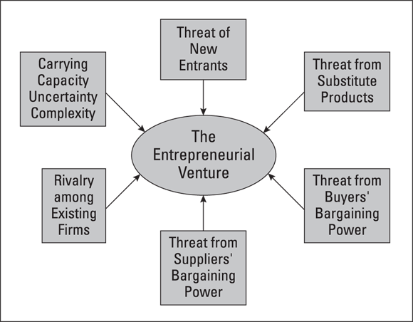
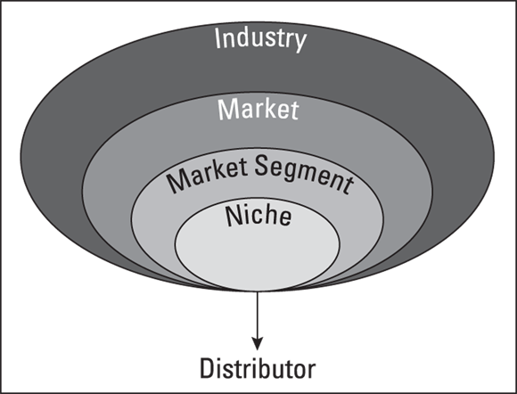

您的业务背景分析
本章从最基础的部分开始，探讨如何跳出局部视角，从更宏观的背景来审视一家初创企业。并非所有企业在诞生之初都是好主意。无论你是否愿意，都需要审视那些会影响企业发展的外部因素。如果在正确的时间、正确的地点选择正确的业务，成功的机会就会大大增加。
介绍可行性分析框架
可行性分析包括一系列在你对某个商业机会了解得越深入时所进行的测试。每次测试之后，你都需要问问自己：是否有什么因素阻碍了前进的步伐，或者你是否仍然想继续推进。可行性分析其实是一个探索过程，在这个过程中，你可能需要多次修改最初的构想，直到最终确定下来。这才是可行性分析的真正价值——它帮助你不断完善和优化自己的构想，从而在创业时获得最大的成功机会。
如今，仅凭一份完善的可行性研究报告，往往就足以获得融资。对于互联网企业而言，速度至关重要。因此，许多互联网公司仅凭概念验证就能获得首轮融资，随后在寻求风险投资等更多资金之前，会进一步完善商业计划书。以下各部分将详细介绍一份全面可行性研究报告的各个组成部分。
执行摘要
执行摘要或许是可行性分析中最重要的部分。因为在短短两页篇幅里，它概括了分析过程中所有测试得出的最重要、最能说服人的结论。一份出色的执行摘要能立刻抓住读者的注意力，让读者对这一理念产生兴趣。它不会让读者轻易放弃阅读；相反，会不断引导读者深入理解这一理念，从而证明该理念确实可行，也必将在市场上取得成功。
在执行摘要中最重要的信息，就是你需要证明客户确实需要你所提供的产品或服务。这一证明来自你与客户进行的调研，通过这些调研可以了解客户对你所提出的概念的看法以及市场需求情况。（关于客户调研的更多信息，请参阅本章后文。）对潜在投资者而言，第二个关键因素是你打算如何通过该业务模式来盈利。这一点我们将在《第一册》的第三章中详细阐述。最后需要重点强调的是关于创始团队的描述。再伟大的想法，如果没有优秀的团队来实施，也无法实现。投资者非常看重创始团队的专业能力和经验。
如果你正在创建一家互联网企业，不妨准备一份所谓的“概念验证文档”。本质上，这是一份仅一页的说明，阐述为什么你的商业模式行得通。其中需重点说明你已经采取了哪些措施来证明用户会愿意使用你的网站。这些证据可以是你的测试版网站的访问数据，也可以是网站上线后已注册并准备使用的用户名单。同样地，如果你正在开发新产品，概念验证其实就是你的最小可行产品或具备市场竞争力的原型。
商业理念
在可行性分析的第一部分中，请回答以下问题：
- 这是做什么生意的？
- 客户是谁？
- 什么是“商业模式”？
- 价值主张是什么？
- 你将如何通过自己的生意赚钱？
- 这些福利将如何发放？
能够用几句话清晰、简洁、直接地阐述自己的商业理念非常重要，这些话必须涵盖该理念的所有要素。这通常被称为“电梯演讲”，因为它短到足以在电梯里讲述。这意味着你只有几秒钟的时间来吸引听众的注意力，所以必须迅速而自信地把所有内容表达清楚（希望进行演讲时，听众正好在高楼的顶层）。如果你正在为投资者准备可行性分析报告，就需要在概念部分首先阐述商业理念。之后再逐一详细说明各个要点。以下是一个例子：
HomePortfolio 为寻求家居设计产品的顾客提供了一个便捷的在线平台。该平台汇集了来自 10 万家的零售商的 70 多万种产品。借助可搜索的风格标签，顾客可以更快速地找到自己中意的商品，并将它们保存在自己的作品集中，还可与他人分享。
在您进一步了解自己的商业理念时，还应考虑能够提供的各种衍生产品和服务。为公司寻找多种收入来源始终是个好主意。
相比于提供多种产品/服务的公司，专注单一产品的企业在取得成功方面面临更大困难。你不应该把所有资源都押在某一产品上，而应给顾客更多选择，这样才能让他们不断回头光顾。
行业分析
在可行性分析中，必须评估你将要进入的行业是否能够支持你的业务模式。所谓行业，指的是那些在同一个价值链或分销渠道中相互协作、共同将产品交付给客户的企业群体。你需要描述该行业的整体状况：它是否处于增长阶段、有哪些发展机遇、谁是行业内的意见领袖、以及该行业是否乐于接受新技术。此外，还要了解该行业中是否有其他规模较小、较新的企业，以便你有机会进入该领域；同时，也需要预判该行业的未来发展趋势。
别忘了，识别绝佳机会的方法之一就是先研究该行业。本章后面会介绍如何进行行业分析。
市场/客户分析
企业虽然属于某个行业，但实际是在市场中进行竞争。在进行市场分析时，需要进行客户调研——尽可能了解哪些人会购买你的产品或服务。其目标是找到“第一个客户”，也就是那些正面临你的企业所要解决的关键问题的人。如果你能准确识别出这些关键问题，那就成功了一半。如果这些问题是其他企业尚未解决的，那么你就找到了市场中的空白领域——也就是那些尚未被满足的市场需求。这意味着你有机会占据该领域并主导整个市场。
在分析的这一部分，你还需要了解潜在客户所期望获得的好处，以及对你所提供产品/服务的需求情况。这类客户有多少？其中会有多少人选择从你这里购买产品/服务呢？此外，你还需考虑各种不同的销售渠道，以便以客户期望的方式将产品/服务的好处传递给他们。关于市场分析的更多内容，请参阅本章后面的部分。
创始团队分析
投资者会非常仔细地考察创始团队，因为即便拥有再好的理念，如果没有能够将其付诸实施的团队，也难以实现。在分析这一环节，你需要重点考虑创始团队的资质、专业能力以及经验。
如果你打算以个人创业者的身份来做这件事，我们建议你重新考虑。大多数成功的初创企业都是由团队共同打造的。原因在于，当今的商业环境极其复杂且变化迅速，没有任何一个人能够同时拥有完成所有工作所需的所有技能、时间和资源。
话虽如此，你仍然有很多办法来弥补自己所缺乏的技能和人才。这并不是说你无法独自创业。你当然可以。不过，这类创业项目最好不需要大量的专业投资资金，因为投资者通常不青睐个人创业项目。
产品/服务开发分析
无论您是打算提供产品、服务，还是两者兼有（通常都是如此），都需要进行充分的规划。请思考为将产品或服务推向市场，必须完成哪些任务：无论是从原材料开始制造产品并可能申请专利，还是制定服务实施的计划。明确各项任务并制定完成时间表。
财务分析
一旦确定有市场和团队之后，就到了考虑资金问题的时候了。（你可能以为我们永远都不会谈到这点！）在可行性分析的这一部分，你需要弄清楚启动业务并实现正现金流需要多少资金，所谓正现金流，指的是收入大于支出。顺便说一下，可行性分析的这一部分也是简要描述“商业模式”的地方（详情请参见第一册的第三章）。此外，还需要区分不同类型的资金——现金、投资、债务——这些在制定财务战略时都很重要。
可行性决策
在完成了构成可行性分析的所有各项测试之后，你就该决定是否要继续推进了。当然，在进行这些测试的过程中，你可能会因为对行业、市场、产品/服务等方面的分析而决定放弃。但如果你依然决定继续，现在就是明确继续推进所需条件的时候了。
发布时间线
在可行性分析的最后制定行动计划非常重要，这样才能增加各项计划得以实施的概率。列出需要完成的任务及相应的完成时间表，有助于确保企业能够按时启动运营。此外，还将资金需求与各项里程碑相结合也是个好主意。你所做的调研会带来回报：它能帮助你准确估算完成所有准备工作并开启业务所需的时间。
了解您的行业
我们生活在一个新产业不断涌现的时代。人工智能、可再生能源与替代能源、大数据分析都属于新产业的范畴。由于这些都是基础性技术，因此可以被应用于各种市场，服务于不同类型的客户。例如，物联网这项相对较新的技术被广泛应用于健身领域、医疗保健、物流乃至农业等领域。在医疗保健领域，医院工作人员现在会常规地为卧床患者佩戴联网可穿戴设备，以监测他们在床上的翻身频率——这一动作对患者的健康至关重要。得知目前连接到互联网的设备数量比地球上的人口还要多，你感到惊讶吗？
一个行业的定义取决于其在特定领域所生产的产品和服务。
各个行业都是由多个层次构成的，从最宽泛的类别开始，逐层细化为更具体的分类。以大家熟知的电子商务企业为例： Amazon.com 。如果把电子商务视为一个行业，即由各类相关企业组成的群体，那么亚马逊就是该行业的一部分。事实上，它是美国在线零售领域的领先企业。在在线零售领域内，亚马逊又是一家以互联网作为营销/分销渠道的零售企业。在零售业范围内，亚马逊还涉足出版、音乐、玩具、视频等多个领域，因为它充当了这些行业的产品分销渠道。
对于你用于可行性研究的行业，应从最宽泛的行业定义入手，逐步细化到包含你所提供产品或服务的具体领域。那就是你的主要行业。
采用产业结构分析框架
了解你感兴趣的行业的其中一个方法是使用通用的分析框架。其中一个值得参考的框架源自 W.H. Starbuck 和 Michael E. Porter的研究成果，他们是组织战略领域的两位知名专家。他们的观点在图 1-1 中有所体现，该图展示了企业家必须持续关注那些影响企业各个层面的各种因素。
如果创业环境看起来像战场——其实往往确实如此！但每个威胁都有相应的应对之策。第一步就是了解这些外部力量。

承载能力、不确定性与复杂性
这一首要的环境因素解释了为何如今众多行业都在发生变革，发展速度加快，同时也让企业更难取得成功。承载能力指的是一个行业能够容纳多少新企业的限度。你可能没有意识到，行业也有可能因为企业过多而变得过度饱和。一旦出现这种情况，企业生产产品和服务的能力就会超过市场需求。这样一来，新企业想要进入该行业并生存下来就变得愈发困难。
不确定性指的是某个行业的可预测性或不可预测性——即稳定性或缺乏稳定性。通常，那些波动大、变化快的科技行业会带来更多的不确定性。不过，也正是这些行业，往往为新企业提供了更多可利用的机会。
复杂性指的是某个行业中输入和输出的数量及多样性。在复杂行业中，企业需要应对的供应商、客户和竞争对手数量都多于其他行业。生物技术和电信行业就是典型的例子，这些行业由于竞争激烈和政府监管严格而具有很高的复杂性。
某些行业的进入壁垒相当高。企业家在试图进入该行业之前，需要仔细研究这些壁垒。以下是主要的一些壁垒：
- 规模经济：指的是能够使企业以较低成本生产商品的产品数量。新兴企业很难与老牌企业的低成本优势相竞争。为应对规模经济带来的挑战，新兴企业通常会结成联盟，从而形成自身的规模经济优势。
- 品牌忠诚度：如果您是一家初创企业，可能会面临那些已经建立起客户忠诚度的竞争对手。这样一来，吸引客户使用您的产品和服务就会困难得多。因此，找到一个自己能够掌控的市场细分领域至关重要——也就是那些市场上尚未得到满足的需求。这样，您就有时间建立起自己的品牌忠诚度。关于市场细分领域的更多信息，请参阅本章后文。
- 高资本要求：在某些行业中，为了与老牌企业竞争，企业需要在广告、研发以及厂房设备等方面投入巨额资金。同样，新兴企业通常通过将这些高成本业务外包给其他企业来克服这一障碍。
- 买家转换成本：除非有充分的理由，否则买家通常不愿意从一家供应商转向另一家。为了吸引客户更换供应商，创业者必须证明自己的产品能够满足现有产品无法满足的需求。
- 获取分销渠道的途径：每个行业都有一套将产品送达客户的手法。新公司若想取得成功，就必须能够利用这些分销渠道。唯一的例外是，当新企业找到了某种客户能够接受的产品或服务交付方式时。互联网成为在线零售的分销渠道时，正是这种情况。
- 自有优势：成熟企业可能拥有某种技术或地理位置优势，从而在新企业面前具有竞争优势。不过，新兴企业往往也凭借自身的独特优势进入某个行业，从而在短时间内享有相对没有竞争的环境。
- 行业敌意：在某些行业中，竞争对手会设置种种障碍，阻止新企业的进入。由于这些竞争对手通常是拥有丰富资源的成熟企业，它们完全有能力采取各种手段将新进入者挤出局外。因此，即便身处充满敌意的行业，只要能在市场中找到合适的细分领域，企业依然有望生存下去。
替代产品/服务的威胁
请记住，您的竞争对手不仅包括那些提供与您相同产品和服务的企业，还包括那些提供替代产品的企业——这些产品或许能以不同的方式解决同样的问题。例如，餐厅之间在食品质量、菜品种类和价格等方面展开竞争。而竞争对手可能会提供完全相同的服务，只不过是通过娱乐形式来呈现。Magic Castle 就是一个例子，它以魔术表演作为娱乐特色。
买方议价能力带来的威胁
当买家能够大量采购时，他们就有能力压低行业价格。例如，Costco 和沃尔玛等公司就拥有这种采购实力。相比之下，新进入者通常无法以批量采购的价格进行采购；因此，他们不得不向顾客收取更高的价格。这样一来，如果对顾客来说价格是唯一的考量因素，新进入者就更难在竞争中取胜。
供应商议价能力带来的威胁
在某些行业中，供应商有权提高价格或改变其向制造商或分销商提供的产品质量。当该行业的供应商数量相对较少，且它们又是该行业原材料的主要供应方时，这种情况尤为明显。别忘了，劳动力也是供应要素之一。在软件等行业，高技能劳动力十分短缺，因此价格会上涨。
现有企业之间的竞争
竞争激烈的行业会迫使价格下降（利润也随之减少）。这时就会出现价格战，就像航空业所经历的那样。一家公司降低价格，其他公司很快也会跟进。这种策略会损害整个行业的利益，也让新进入者几乎无法在价格上展开竞争。相反，精明的企业家会努力寻找市场中尚未被满足的细分领域，在那里他们不必在价格上竞争，而是通过所提供的价值来竞争。
确定进入策略
你所处行业的结构将在很大程度上决定你进入该行业的方式。如果不考虑行业结构，你可能会花费大量时间和金钱，最终却发现选择了错误的进入策略。到那时，你可能已经错失了良机。一般来说，新兴企业有三种主要的进入策略：差异化竞争、专注细分市场以及成本优势。这是一个至关重要的决定，因此本节将详细探讨每种策略。
- 差异化：通过差异化战略，企业试图通过产品/流程创新、独特的营销或分销策略以及品牌建设，使自身在行业中区别于竞争对手。如果能够通过差异化战略赢得客户忠诚度，那么企业的产品或服务就不那么容易受价格波动的影响，因为客户会认可与该公司合作所带来的内在价值。
- 利基市场：利基战略或许是新兴企业最常用的创业策略。因为它能让创业者在一段时间内进入一个没有直接竞争对手的市场。该策略包括寻找并创造一个市场上无人涉足的领域——去满足那些尚未被满足的需求。这样的利基市场为创业者提供了空间和时间，使其不必与行业内的老牌企业正面竞争。创业者可以先在这个领域确立标准、建立品牌忠诚度，然后再等待其他竞争者进入该市场。
在为商业决策做调研时，先找出所有可能危及企业生存的因素，然后再关注那些积极的支撑因素。如果发现了负面因素，比如市场规模过小或监管过严，要进一步深入调查。负面因素或许是你能收集到的最重要信息，因此不要回避它们。
- 成本优势：对于初创企业来说，要成为低成本领先者极其困难，因为这一策略高度依赖大规模销售和低成本生产，而这两点都是初创企业难以承担的。不过，当初创企业处于一个所有参与者都面临相同劣势的新兴行业时，它们或许可以凭借提供最低成本的产品和服务来获得优势。
你应该避免在价格上竞争。以如今的搜索引擎技术，顾客只需上网就能轻松找到全球最低的价格。你应该在功能和服务上展开竞争，其中服务尤为重要。如果你的产品或服务无法解决顾客面临的紧迫问题，那么无论在何种情况下，你都将难以与之竞争。
注意到几点需要注意的事项
在此需要就“行业分析”再提两点需要注意的事项。
前几节所描述的方法论由哈佛大学著名教授Michael Porter在 20 世纪 80 年代推广开来。这一方法很快在学术界和商业界广为流传，被称为“竞争分析”。对教授和学生而言，其受欢迎的原因在于它为制定企业战略提供了易于使用的框架；对商业从业者来说，该模型的吸引力在于它展示了如何盈利。本质上，该模型强调：通过避免与其他行业现有企业直接竞争，可以实现利润最大化。具体做法包括：为新进入者设置进入壁垒（例如利用专利）；通过让客户承担“转换成本”来保持其忠诚度（例如设计不可转让的航空里程计划）等等。企业越能在价格竞争上做到独善其身，盈利就越容易。
难怪商界领袖们如此青睐这一模型！然而，时代已经变了：数字化和互联网的兴起彻底改变了商业格局。正如我们之前所指出的，如今的消费者能够获取海量信息，因此可以轻松找到最优惠的交易。因此，波特模型虽然有助于理解所处行业的运作方式，但很少能直接作为盈利的指导模板。
关于行业分析，还有另一个问题需要引起您的注意。在前面“运用行业结构分析框架”这一部分中，我们将亚马逊列为电子商务零售行业的企业。要评估该企业在该领域的前景，就需要深入研究整个行业。但亚马逊的成功仅仅源于其在电子商务领域的实力吗？其实并非如此。该公司超过一半的利润来自其子公司 AWS（亚马逊网络服务），该机构为众多企业提供互联网云服务。有分析人士甚至认为，如果没有 AWS 带来的盈利，亚马逊恐怕难以生存。再来看谷歌：它究竟在哪个行业竞争呢？当然是在线搜索领域。但实际上，谷歌 75%以上的收入来自广告业务。那么，谷歌到底是一家搜索公司、广告机构，还是信息提供商呢？
此类例子不胜枚举。现代 21 世纪的企业越来越倾向于在多个市场同时展开竞争，而这些市场并非都是其利润的主要来源。这一情况使得传统的波特行业分析模型变得不再那么适用。在研究你打算进入的新领域的竞争格局时，请务必牢记这一点。
研究你的所在行业
深入了解你所处的行业，是制定任何商业战略的关键。虽然这需要付出大量精力，但其带来的回报往往是巨大的。
幸运的是，如今利用二手信息来研究某个行业要容易得多——也就是说，那些由他人收集的信息，因为这些数据都很容易从网上获取。使用可靠的搜索引擎是个不错的起点。这能让你了解该行业的大致情况以及当前趋势。行业杂志、Gartner Inc.（这家以研究新兴技术而闻名的咨询公司），以及你所在地区的学院或大学，也都是获取行业信息的优秀渠道。无论使用何种信息来源，都要问问自己：这些信息是谁提供的？他们的目的何在？又具备怎样的专业资质？
如何核实信息来源？你可以采取以下措施：
- 问问自己，该网站或作者在该领域是否具有权威性或专业性。
- 向那些熟悉你所研究领域的人士咨询，问问他们是否听说过那个网站或那个人。
- 将该网站或该人士的说法与其他人的观点进行比较。如果有多个来源的说法一致，那大概没问题。但如果发现很多矛盾之处，就需要进一步调查了。当然，不要以为只要很多人认同某件事，它就一定是真的；谣言不正是这样传播开来的吗？
二手数据有助于全面了解某个行业的情况。不过需要注意的是，二手信息可能已经过时。因此，对所处行业进行一手调研非常重要。一手调研意味着要深入该行业，与业内人士进行交流。这些业内人士包括：
- 行业分析师
- 供应商和经销商
- 客户
- 关键行业企业的员工
- 律师事务所、会计事务所等服务机构的专业人士
- 贸易展会上的专家们
回答关于您所在行业的关键问题
当你开始研究所在行业的相关信息时，可能会被海量数据淹没。为了有效管理这些数据，不妨从那些你需要解答的关键问题入手。这些问题包括：
- 该行业正在增长吗？增长可以通过多种方式来衡量：员工数量、收入、产量，以及进入该行业的新公司数量。
- 主要参与者是谁？你需要了解哪些公司在该领域占据主导地位、它们的战略是什么，以及你的业务与它们有何不同。
- 该行业中的机会在哪里？在某些行业中，新产品和服务能带来更多机会；而在另一些行业中，创新的营销和分销策略才能决定成败。
你需要回顾和展望整个行业的发展历程，判断过去发生的事情是否预示着未来的趋势。了解行业分析师对行业未来的预测也很有帮助。但要想真正了解行业的未来，最好关注那些正在研发中、可能五年内才会面市的新技术。以下是一些你可能需要寻找答案的问题：
- 新技术的现状如何？在研发方面的投入又有多大？您想了解该行业创新的快慢，以及总体上在研发上投入了多少资金。
- 你们的行业能快速采用新技术吗？如果属于传统行业，那么采用新技术的速度可能会较慢。相反，新兴行业在技术应用方面通常更为迅速，因此你们需要做好相应准备。
- 你们的行业是以技术为基础的，还是由新技术推动发展的？只要看看各大企业在新技术研发上的投入规模，就能很好地了解技术对你们行业的重要性。同时也能了解到产品开发周期的快慢，从而判断出竞争所需的反应速度。
- 该行业中有没有年轻且成功的企业？如果你发现所在行业中没有新公司成立，那么很可能这是一个由几家主导企业构成的成熟行业。这并不一定意味着你无法进入该行业，但确实会大大增加进入的难度和成本。
- 该行业面临哪些威胁吗？您或其他人是否察觉到任何可能使该行业某个领域走向淘汰的因素？当然，如果您在 20 世纪 80 年代初从事办公设备机械行业，那么随着个人电脑的推出和普及，您肯定已经预见到了即将到来的变革。
- 该行业的典型毛利率是多少？毛利率（或称毛利润率）反映了企业可以承受的多大误差范围。毛利率是指毛利润（销售收入减去销售成本）占销售总额的百分比。如果像食品杂货行业那样，该行业的毛利率仅为 2%（有时甚至更低），那么企业几乎没有出错的余地：因为 98%的收入都用于支付直接生产成本。只剩下 2%的资金用于支付管理费用和实现盈利。另一方面，在软件等行业，毛利率可高达 70%甚至更高，因此企业有更多的资金用于支付各种费用和获取利润。
研究上市公司
在大多数行业中，上市公司——即在证券交易所上市的公司——都是规模最庞大、实力最雄厚的企业，往往也是该行业的领军者。因此，了解这些公司是很重要的。它们还可以作为该行业最佳实践的参考标准。目前有大量与上市公司相关的在线资源。以下是其中一些较好的资源：
- D&B Hoover’s Online, <www.dnb.com/products/marketing-sales/dnb-hoovers.html> ：这是邓白氏的官方网站。该平台提供了涵盖全球 4.2 亿多家公司的最全面商业数据。无论是寻找高价值的目标企业，还是获取所在行业重要企业的关键信息，这都是绝佳的来源。您可以在有限时间内免费试用 D&B Hoover’s Online。
- 美国证券交易委员会， <www.sec.gov> ：该网站包含证券交易委员会的 Edgar 数据库。虽然用户界面不太友好，但其中有关于上市公司的诸多有用信息。
- Free Edgar, <www.freeedgar.com> ：这里是研究上市公司以及那些已申请上市的公司的好去处
在政府网站上搜索数据
你会发现一个庞大的政府网站网络，其中大部分内容都是关于经济新闻、出口信息、立法动态等方面的免费信息。这些网站主要通过两个渠道被链接过来：
- USA.gov, <www.usa.gov>
- FedWorld, <www.thecre.com/fedlaw/legal30/supcourt.htm>
如果您无法连接到这些网站中的任何一个，请尝试使用其他浏览器。
您可能还想直接访问以下许多其他常用网站：
- 美国商务部， <www.doc.gov> ：在这里，您可以找到关于美国经济的所有你想知道的信息。
- 美国人口普查局， <www.census.gov> ：这里汇集了每十年一次人口普查所统计的数据。
- 劳工统计局， <www.bls.gov> ：这是一个提供经济相关信息的网站，重点关注劳动力市场。
- 专利与商标局， <www.uspto.gov> ：本网站汇集了您想了解的关于专利、商标、版权以及各类产品和服务法律保护措施的所有信息。
- 美国众议院， <www.house.gov> ：如果您正在关注可能影响您所在行业的任何立法，那么这里正是您该查看的地方。
使用人工智能工具
如果我们不告诉您，人工智能领域那些令人兴奋（有时也令人恐惧）的新技术在开展行业研究时能发挥重要作用，那未免失职。除了之前提到的各种工具外，人工智能也是极其重要的信息来源。利用人工智能，您能在极短的时间内获取所需信息，其成本也远低于传统方法。
- 该模型通过在大型数据集上学习来生成输出结果。例如，它可以回答诸如“2021 至 2025 年这五年中，美国在各个年份里对某种产品的市场需求有多大”或“哪些公司正在研发某种产品的新版本”之类的研究问题。
- 该模型中的算法使其能够即时扫描整个网络。它会搜索与你所定义的主题相关的所有现有数据——也就是你用来构建搜索问题的那些“提示词”或词语。该模型会分析从网络上获取的文字内容中的各种模式和关联，然后利用这些信息来生成符合人类语言逻辑的回应。
- 没错，您没看错：GPT 真的能在几分钟甚至几秒钟内，吸收互联网上现有的所有信息。之后，它会用连贯的英语（如果您使用的是这种语言）出具分析报告。
- 该模型还能生成可视化内容。随着这项快速发展技术的不断进步，它能够生成各种图表、表格和图像。此外，借助“智能体 AI”，该模型还能根据历史趋势和数据分析能力，预测市场走向，并为如何实现预期目标提供指导建议。
例如，OpenAI 的 ChatGPT 平台能够在无需人工干预的情况下完成研究任务——用户只需给出相应的指令来启动流程即可（也就是说，用户不必费力去到处寻找那些缺失的数据）。OpenAI 是一家 2015 年成立于旧金山的研究实验室。该机构宣称自己的目标是打造“安全且有益”的通用人工智能，其定义为“在大多数具有经济价值的工作中都能超越人类表现的高度自主系统”。
先进行初步的试用测试：
- 在您的设备上打开 ChatGPT 网站。
- 登录或创建免费账户。
- 可以直接输入指令或用语音命令告诉 ChatGPT 该做什么（即“提示词”）——例如：“目前在印第安纳波利斯开设一家高端女性服装店是个好主意吗？”
非常简单吧？如果你能顺利完成这个小测试，那就继续阅读本书的其余部分吧。我们在书中会指出人工智能可能在哪些领域发挥作用。
尽管 OpenAI 最近引发了诸多争议——这反映出社会普遍担忧人工智能会对我们生活的方方面面构成威胁——但人工智能在档案研究领域的巨大潜力却是毋庸置疑的。
然而，事实是，人工智能在几乎所有商业领域都发挥着至关重要的作用（产业研究仅仅是其中之一），因此各种竞争平台纷纷涌现。以下所有人工智能平台都在激烈地与 ChatGPT 争夺用户的关注与支持：
- 谷歌开发了 Gemini。
- Anthropic（由前 OpenAI 员工创立）开发了 Claude。
- 微软拥有 Co-Pilot 技术（同时还持有 OpenAI 的大部分股份）。
- Meta（即 Facebook）大力宣传 Meta AI。
- 亚马逊提供了 Amazon Q 服务。
- 企业家埃隆·马斯克大力宣传 xAI。
快速浏览一下 <www.domo.com/learn/article/ai-data-analysis-tools> 吧。该网站概述了目前一些领先的人工智能工具（不过需要注意的是，自本书付印以来，可能又有一些新工具加入了竞争行列）。
你可能现在已经意识到，人工智能不仅是一种能协助你完成行业研究任务的强大工具，也对许多企业的未来构成了直接威胁。例如：
- 股票经纪公司正在利用人工智能来为客户制定理想的投资组合分配方案——这项工作通常由薪酬优厚的财务顾问来完成。
- 学生们逐渐意识到，人工智能可以帮他们完成作业，从而不再需要家教了。
- 婚礼策划师正面临灭绝的威胁，因为人工智能能够处理这一充满情感意义的仪式中最为繁琐的细节——而且无需支付雇佣人工的开支。
此类情况不胜枚举，因此在考虑进入创业领域时，务必将这一点纳入可行性分析中。
最后一点：虽然人工智能是你在为新项目收集数据时通往理想目标的捷径，但这并不意味着传统方法毫无价值。人工智能本质上只是一种工具，其效果完全取决于它所收集和分析的数据质量。通过亲自从事那些传统的工作，仔细筛选海量信息，你或许能发现一些珍贵的信息，或者找到解决难题的关键线索——而这些信息可能从未被上传到互联网，因而也逃过了人工智能的“捕捉”。
所以这里的教训是：正如我们在本章中所描述的，应将人工智能驱动的行业数据搜索与个人调查能力相结合。（给聪明人的提示：同样的建议也适用于第二册的第一章。）不要陷入“工具决定一切”的谬误——也就是说，不要以为工具能解决所有问题（比如：如果你把锤子交给孩子，他们就会觉得周围的一切都是钉子！）。
暂时离线以进行更多研究
互联网并非获取重要信息的唯一途径。一些值得考虑的离线信息来源包括：
- 行业贸易协会：几乎每个行业都有自己的贸易协会，这些协会通常会出版相应的期刊或杂志。贸易协会会密切关注本行业的动态，因此是信息丰富的渠道。如果你真心想在某个行业创业，不妨考虑加入相应的贸易协会，这样就能获取内部信息了。
- 人脉、人脉、还是人脉：抓住一切机会与行业内的人士交流。他们每天都在一线工作，能提供比媒体或互联网上更及时的信息。
进行客户发掘工作
正如本章前面所提到的，产业是指在同一价值链中运作的各类企业的集合。这些企业在不同的市场上相互交易、相互竞争。市场则是指某个产业所服务的客户群体。请看图 1-2，进行可行性分析时，应从更广泛的产业层面逐步细化到更具体的市场细分领域。
客户发现是一种通过同理心来获取客户信息的做法。这也被称为设计思维方法。其核心在于：让企业站在客户的立场来思考问题，从而从客户的视角审视自己所提供的产品或服务。我们必须反复强调：从客户的角度来评估产品/服务至关重要。要做到这一点，就需要深入了解客户，而这需要付出一定的努力——也就是所谓的客户发现过程。
在客户发现过程中，可以先对潜在客户有一个较为宽泛的定义。请记住，随着对客户的了解加深，你需要不断细化这个定义，使其更加精确。

如果你认真对待这个过程，可能会发现：自己之前对客户及其需求或愿望的假设，实际上与现实情况大相径庭。例如，Mikita、DeWalt 和 Craftsman 这类公司都生产用于电钻的钻头——那些由各种尺寸的合金金属制成的旋转部件。这些公司就是在这一领域展开竞争的。但客户真正想要的是什么呢？并非钻头本身。他们想要的是在某种材料上打孔：木头、塑料、石膏板、金属，无论是什么材料。钻头只不过是实现目标的工具而已。谁知道呢，也许某个你尚未考虑过的竞争对手，正在研发基于激光的新技术，能以更简单的方式满足客户的需求。因此，在分析客户时，不要只盯着表面现象：要弄清楚真正驱动他们需求的原因，并将这些因素纳入你的商业计划中。
为了应对在感兴趣的市场中遇到的海量数据带来的困扰，你可以牢记以下几个关键问题：
- 你能进入哪些潜在市场？这些市场之间有明显差异吗？它们的规模有多大，增长趋势如何？
- 在你正在考虑的所有市场中，哪些客户的需求最为迫切？换句话说，谁最需要你的解决方案？
- 这些客户是如何购买产品的？购买的频率如何？他们通常是通过什么渠道了解到该产品或服务的？
- 你将如何满足他们的需求？你能提供哪些具体的好处？
就像你在进行行业研究时所做的那样（正如我们在本章前面所描述的），你首先需要了解整个市场概况，因为这会影响到你日后确定的各个细分市场。以下是一些有助于你全面了解整个可进入市场——也就是所有潜在客户的信息：
- 市场规模有多大？市场规模越大，机会就越多，能够占据的细分市场也越多，从而有助于企业的成长。
- 该市场的人口统计特征是什么？人口统计数据包括年龄、收入、种族、职业和教育程度。这些数据常被用来将市场划分为不同的目标群体。（市场细分的内容将在下一节中介绍。）需要注意的是，人口统计特征也适用于作为客户的各类企业——例如，企业的规模、收入水平、员工数量、市场份额等等。
- 在这些目标群体中，哪一个最有可能购买您的产品/服务？为什么？
- 你有办法接触这个目标群体吗？竞争对手目前是如何接触该群体的？这个群体是否集中在某个特定的地理区域？
- 针对这一群体，哪些营销策略取得了成功？
在这一点上，你所收集的所有信息都来自二手资料——也就是别人的数据。你所收集的研究数据的可靠性完全取决于这些数据来源的可靠性。因此，请务必比较多个来源的数据，以确保其能用于你的计算分析。
对市场进行细分
在每个庞大的客户群体中，都包含着不同的细分群体。例如，在购买书籍的庞大客户群体中，就包含着各种不同偏好的客户群体：
- 旅游类书籍（或任何其他类别的书籍）
- 儿童读物
- 适合自己动手的读物/适合 DIY 爱好者的书籍
- 有声书
在每个市场细分领域中，都可以找到更小的细分市场——那些可能尚未得到满足的特定需求，例如：
- 专为残障人士编写的旅游书籍
- 以少数族裔为题材的儿童读物
- 教给手工爱好者如何应对各种技术的书籍
- 为专业人士提供最新期刊文章的有声书
市场细分领域为创业者提供了机会：趁大公司还未注意到并进入该领域竞争之前，先进入该市场并占据主导地位。独自占据一个小细分领域意味着你可以有一段“平静期”，在这段时间里，你可以独自满足那些尚未被满足的客户需求。这样一来，你就能为该领域制定标准并不断提升自己的技能。简而言之，至少在一段时间内，你都是该领域的市场领导者。
在确定目标市场时，请务必确保所选择的细分市场足够大，具备盈利潜力。你所选择的细分市场必须拥有足够的客户愿意购买你的产品，这样才能让你支付各项开支并实现盈利。关于如何进行市场调研，我们将在本章后面部分详细探讨。
确定目标市场，其实就是找出最有可能购买你产品或服务的人群——也就是你的主要客户。之所以要确定这些主要客户，是因为让新产品或服务被客户知晓既耗时又耗钱，需要大量的营销投入。而很少有初创企业能承担这样的成本。因此，与其试图覆盖各种类型的客户，不如把精力集中在那些最有可能购买你产品的客户身上，这样效果会好得多。更重要的是，先从最容易销售的客户入手，有助于你快速站稳脚跟、提升品牌知名度，进而更轻松地开拓其他潜在客户。
并非所有客户都是个人；很多是其他企业（B2B 交易）。事实上，如今互联网上交易额最大的是企业间的交易。如果向您付款的是分销商、批发商、零售店或制造商，那么您的客户就是企业，而非个人消费者。作为客户的企业的描述方式，与描述个人基本相同。企业有各种不同的规模和营收水平。与消费者一样，企业也有各自的采购周期、喜好和偏好。
请不要忘记，如果您的客户是另一家企业，那么该企业可能并非您产品或服务的最终用户。在这种情况下，您同样需要与最终用户打交道。最终用户才是真正的消费者，也就是实际使用产品或服务的人。例如，请参见图 1-3，该图展示了一种典型的产品分销渠道。
如果图 1-3 中的分销渠道里摆满了你的产品——比如冰箱——那么你的客户是谁呢？这取决于你的公司在价值链中的位置。如果你是制造商，你的客户就是从你这里购买冰箱后再转售给零售商的分销商。而零售商则是分销商的客户。最终使用冰箱的消费者，既是零售商的客户，也是你的最终用户。（确定客户的最简单方法就是找出谁在向你付款——跟着钱流去吧！）
仅仅因为最终用户从技术层面来讲并非你的客户，这并不意味着你可以忽视他们。相反，你需要像了解客户一样了解最终用户，因为你必须让经销商相信：你的产品有市场前景，最终用户会购买足够数量的产品，从而使经销商和零售商能够盈利。因此，你必须对最终用户进行与对经销商相同的研究。很抱歉，这意味着工作量会翻倍，但这是值得的。
确定你的细分市场/目标受众
定义和分析目标市场的主要目的是为了找到进入该市场的途径，从而获得竞争的机会。如果没有战略就进入市场，只会自取失败。你毕竟是个新来者。如果顾客无法区分你的产品与竞争对手的产品，他们就不太可能从你这里购买。人们通常更愿意与熟悉的人打交道；如果他们对竞争对手的产品很满意，就不愿承担更换品牌所带来的成本。
利基战略或许是企业家最理想的策略，因为它能带来最大的控制权。正如我们之前所说，打造出无人涉足的利基市场是成功的关键。这样一来，你就能成为行业领导者，为后来者制定标准。作为该利基市场的唯一参与者，你可以在出现直接竞争对手之前，先在相对稳定的环境中发展业务（即“平静期”）。应对竞争对手需要大量营销投入，而对于初创企业来说，有限的资源有更重要的用途。
如何找到别人尚未发现的细分市场呢？通过与客户沟通、了解他们的需求来发现问题。你的商业机会所源自的目标市场，同时也蕴含着你的进入策略的答案。从潜在客户那里，你能了解到竞争对手的产品和服务中缺少了什么。他们还会告诉你，要让他们对你的产品感到满意，需要满足哪些需求。满足这些未被满足的需求，就是你的进入策略。请记住，客户购买的是各种好处，因此要留意诸如“节省时间”、“省钱”或“让客户看起来更年轻、更富有、更苗条、更聪明”之类的描述。每一个出色的解决方案背后，都有一位明白客户价值观的企业家——而这些价值，永远是与客户直接相关的利益。
锁定产品解决方案
许多创业者都想从事产品相关业务，但不太清楚该如何入手。当然，你可以从其他国家进口产品，或者从国内制造商那里采购商品。但如果你想研发和销售全新的技术或具有独特性的产品，那么你有三种选择：自行发明、与发明者合作，或获得专利许可。以下部分将更详细地探讨这些方法。
成为发明家
大多数企业家并非发明家——并非因为他们没有发明能力，而是因为他们的注意力集中在其他地方。企业家和发明家的思维方式往往大相径庭，很难在同一个人身上同时找到这两种特质。不仅思维方式不同，各自所需的技能也截然不同。一般来说，纯粹的发明家并不关心事物的商业层面。他们发明只是出于对发明的热爱。除非有企业家发现该发明的商业价值，否则这项发明很可能无法进入市场。
许多类型的发明家——工程师、科学家等等——更喜欢在实验室里工作。你需要问问自己哪种角色更适合自己，然后选择它。其他所需的人才总能在别人身上找到。事实上，大多数发明家永远无法看到自己的发明进入市场，因为他们不了解将新技术转化为商业产品的整个流程。
与一位发明家合作
企业家通常会与发明家合作，将新产品推向市场。与发明家合作的机会往往来自你所在的行业。当你听说有人正在开展某个项目时，不妨深入调查，看看是否有有趣的发明。不要犹豫，主动与发明家联系吧，但需要注意几点重要事项：
- 发明家通常对自己的发明充满疑虑。他们坚信一定有人想窃取他们的创意。
- 发明家通常不具备商业头脑，也不想成为商人。他们热爱发明创造，因此不必指望他们能在商业领域发挥作用。
与发明人共同制定一项安排，确保该安排不会妨碍你们将发明商业化的努力。你们各自都为这项合作带来了非常重要的元素，因此在签署任何书面协议之前，务必确保能够良好地合作。
发明的许可授权
企业、大学、政府以及独立发明家都在寻找能够将其发明商业化的创业者。你可以通过一种被称为“许可协议”的方式获得这些发明的使用权。许可协议赋予你在约定时间内、以约定方式使用该发明的权利。作为回报，你需要向发明家支付使用费，通常是根据该发明带来的产品销售额的一定比例来计算的。
政府拥有许多为军事和航空航天计划等开发的核心技术。你可以获得这些核心技术的许可，并将其应用于其他行业。例如，如果你访问 NASA 的技术网站 https://technology.nasa.gov ，就可以浏览通过 NASA 的许可计划可以获得的、具有商业价值的专利。
或者，您可以前往各大知名研究型大学的科技许可办公室，那里会有更多机会。例如，斯坦福大学的科技许可办公室负责评估、推广和许可斯坦福大学拥有的各项技术。如果您访问他们的网站 https://otl.stanford.edu ，将会有一套完整的流程指导您，帮助您获得其中某项技术的许可。首先，请了解他们的许可流程，然后挑选您感兴趣的技术。点击相应链接，您将看到该技术的描述、图片或示意图，以及负责人的联系方式。
大学是各种新技术的宝库，你可以加以利用。当然，大学要求你证明自己具备将这些技术商业化的能力。换句话说，你需要证明自己了解市场和行业状况，并且有足够的资金来推动技术的商业化进程。